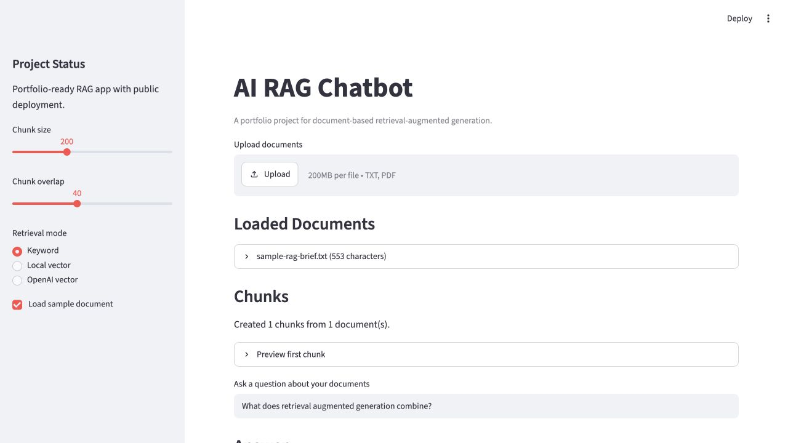
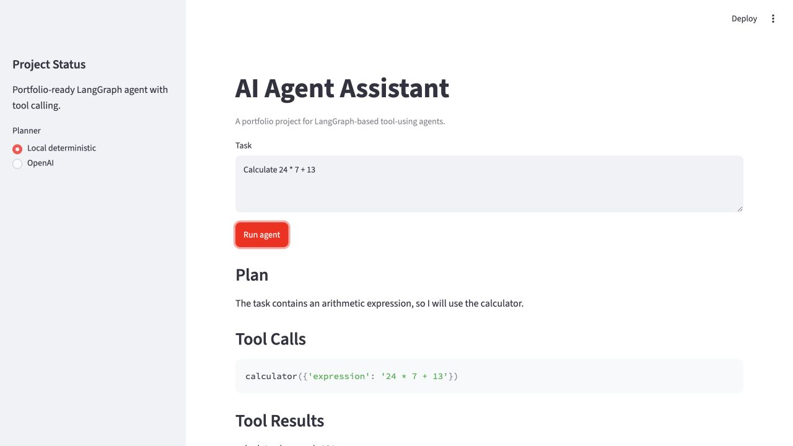
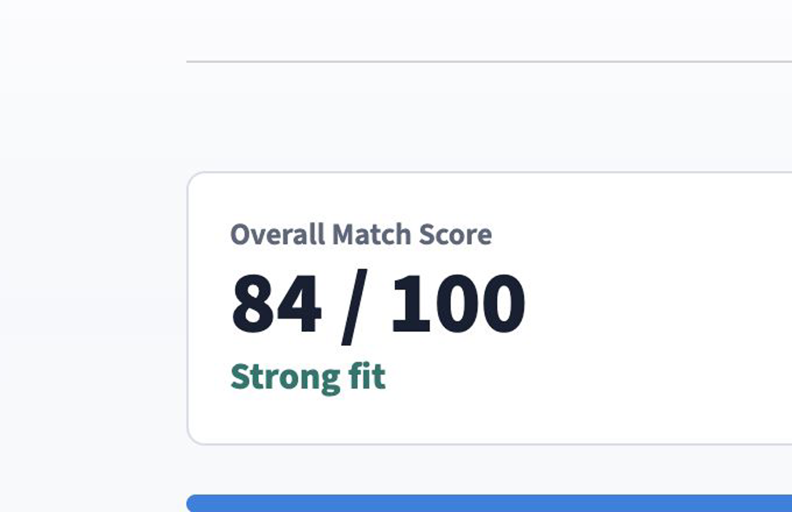
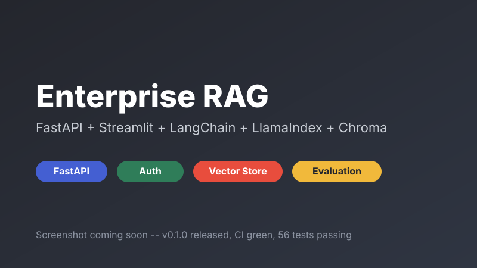

AI RAG Chatbot
LiveDocument-based chatbot with sample data, chunking, retrieval, citations, offline evaluation reports, walkthrough video, local and OpenAI embedding modes, tests, CI, and deployment docs.
AI Engineer in progress
I build practical AI systems that can be designed, tested, deployed, documented, and explained in internship and full-time interviews.
Featured projects

Document-based chatbot with sample data, chunking, retrieval, citations, offline evaluation reports, walkthrough video, local and OpenAI embedding modes, tests, CI, and deployment docs.

Tool-using assistant with planning, calculator/search tools, LangGraph workflow, execution memory, tool error recovery, offline evaluation reports, walkthrough video, tests, CI, docs, and deployment.

Business-facing resume analysis product with FastAPI backend, Streamlit frontend, ATS-style scoring, skill gaps, keyword matching, bullet rewrites, cover letter drafting, interview questions, Docker, CI, and evaluation.

Flagship RAG platform: FastAPI backend with JWT auth and an admin dashboard, multi-format document ingestion (PDF, DOCX, PPTX, TXT, Markdown), a Chroma vector store behind a Protocol designed for a future pgvector swap, a LlamaIndex-backed alternative retrieval implementation, persisted conversation memory, an offline evaluation suite, Docker Compose, and CI with a dedicated Docker build check.
Technical stack
My current work focuses on the full loop: Python application code, LLM integrations, retrieval or agent orchestration, tests, CI, deployment, and explanation-ready documentation.
Engineering habits
Modular source packages, typed data models, deterministic fallbacks, and user-facing Streamlit interfaces.
Unit tests for ingestion, retrieval, graph behavior, planner decisions, and tool failure handling.
Public Streamlit apps, GitHub releases, deployment notes, repo metadata, and CI status checks.
README walkthroughs, architecture diagrams, screenshots, demo GIFs, walkthrough videos, and interview explanation scripts.
Background
I bring a mix of technical engineering, urban systems thinking, and business education into AI product development. That background helps me connect model behavior, product value, user workflows, and operational risk.
Contact
The best current contact path is GitHub. The repositories include live demos, source code, tests, release notes, and architecture documentation.